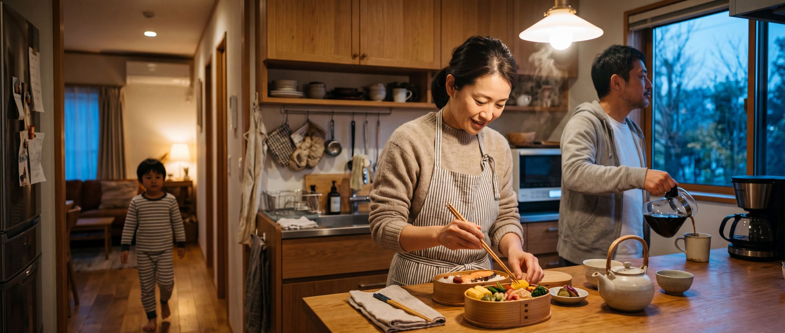
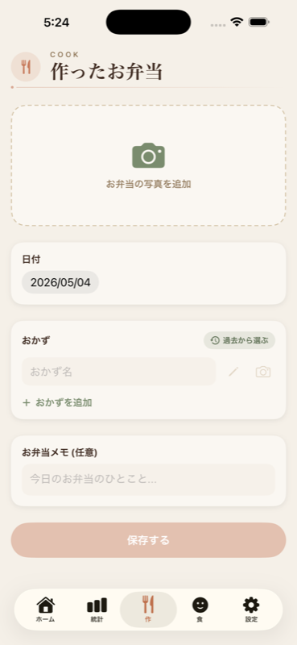
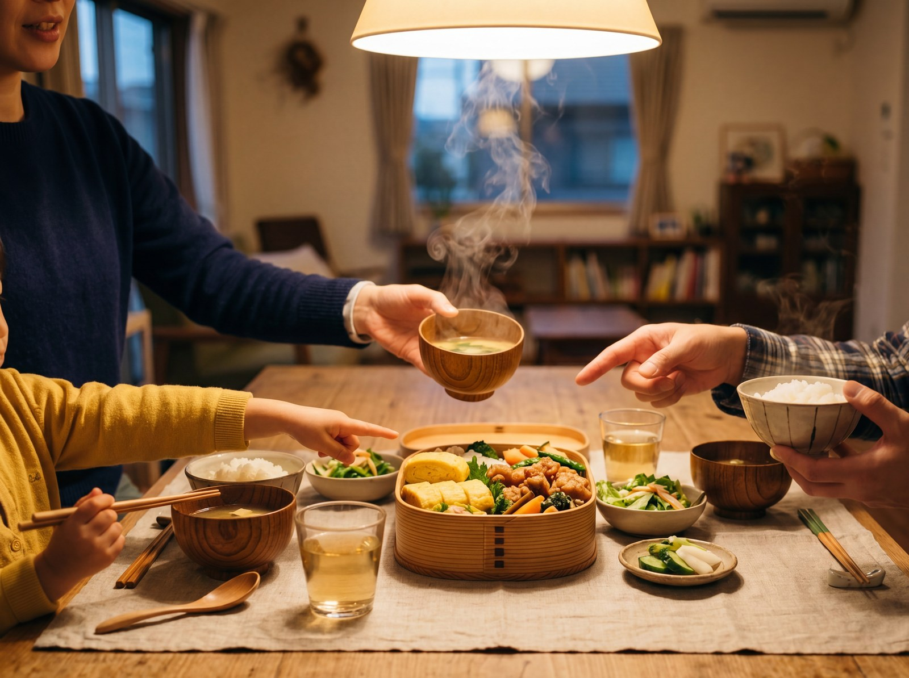
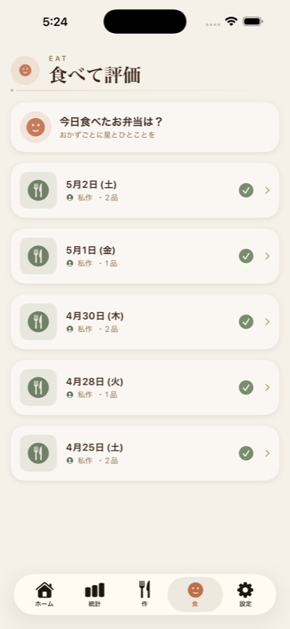
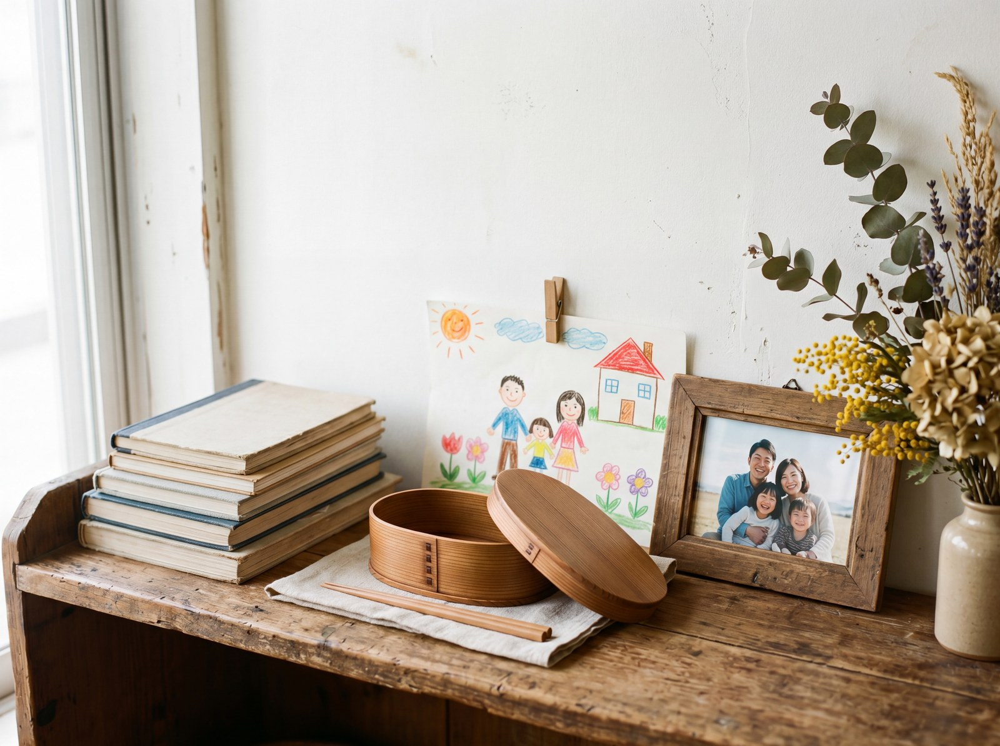
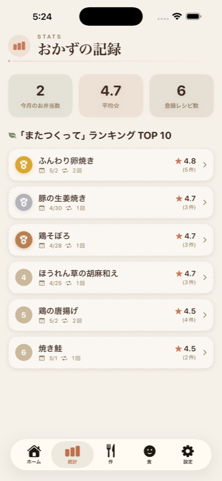
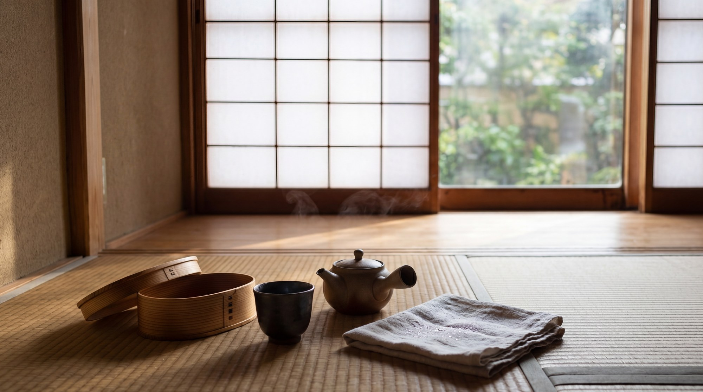

家族の食卓を、もっと愛おしく。
手早く詰める、彩りを考える、好みを覚える。
繰り返される朝の小さな仕草の積み重ねが、いつしか家族の歴史になります。
うちの弁活は、その毎日に静かに寄り添い、
「また作って」と言われた一品を、丁寧に集めていくためのアプリです。

おかず名と日付、写真を 1 枚。
それだけで、その日のお弁当が献立帳に並びます。
手間を増やさないことが、続けるための一番の近道。
毎日の小さな記録が、いつか家族のレシピ集になります。


「美味しかった」「また作って」を
ひとことで残せます。
★ 1〜5 の星と短いコメントが、毎日キッチンに立つ人への、家族からのいちばんの応援になります。


家族が本当に喜んだおかずが、
ランキングで自然と浮かび上がる。
毎日のレパートリーに迷ったら、家族のお気に入りから選ぶだけ。
作る人の判断を、いつも家族の声がそっと支えます。

同じ朝の繰り返しが、UCHI NO BENKATSU
家族の歴史になる。
iPhone 向け、無料。Sign in with Apple のみで、メールアドレスや SNS 連携は不要です。
Download on the App Store